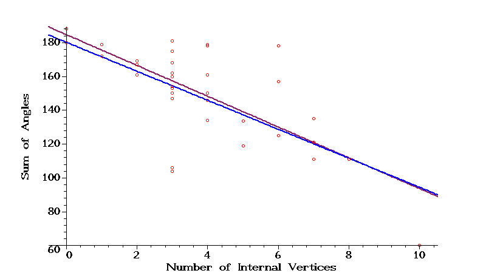

Triangles in hyperbolic space
One of the sub-activities in the hyperbolic football activity is drawing triangles in the hyperbolic plane and measuring
the sum of their angles.
(Described there at Triangles and Curvature.)
When I get data from a classroom, it is instructive to plot it.
The plots below display the students' data as red circles, the maroon line is the line
fitted to the data using the least-squares method, and the blue line is
"sum of angles" = 180-60/7*(number of internal vertices),
which represents the theoretical relationship.
(60/7 is about 8.57.)
Note that despite the noisy data from the students, the fitted line is quite close to the true line.
Sarah Witherspoon's Math 367 Class on February 1 2018.
Fitted line:
"sum of angles" = 184.52 - 9.105 *(number of internal vertices) .

Last modified: Sun Mar 4 08:05:38 CST 2018